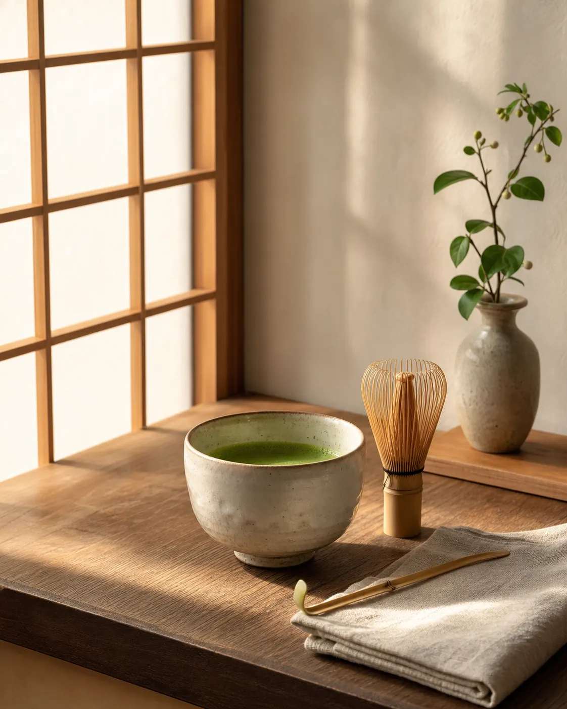
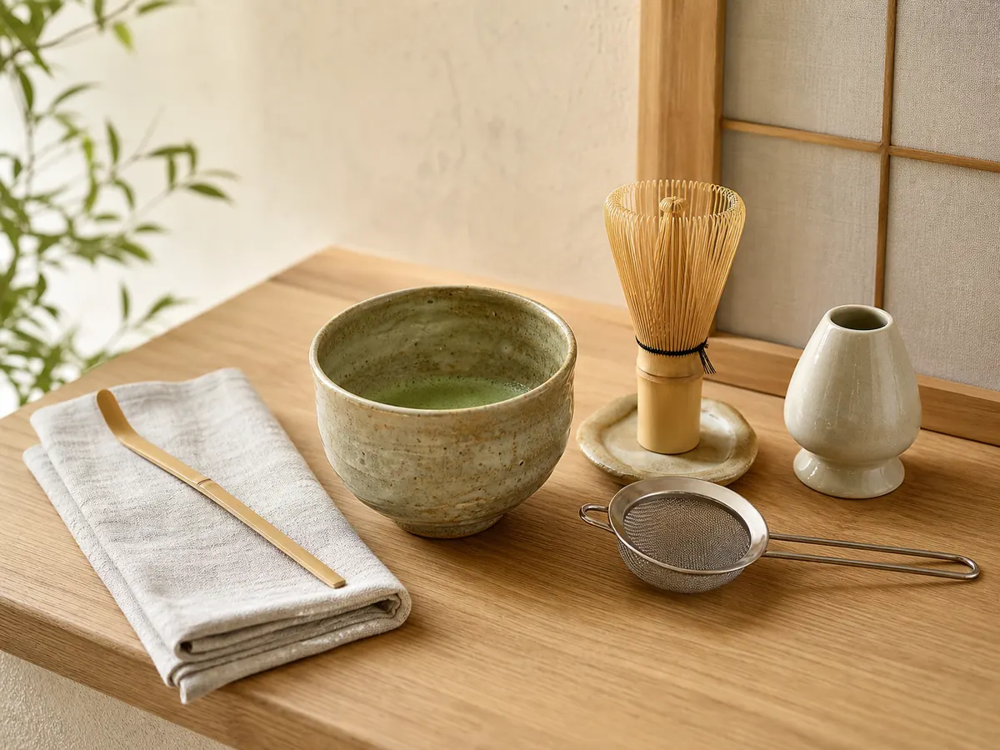

Japanese Loose-Leaf Culture
Why Do Japanese Students Use Campus Loose Leaf Paper?
See how B5 pages, slim binders, subject dividers, and rearrangeable notes support a flexible Japanese study method.
Read the cultural guideCulture · study · everyday life
English cultural guides to the notebooks, study habits, stationery, rituals, and design choices that shape daily life in Japan.
Explore Japanese Notebook Culture
Featured guides
See how B5 pages, slim binders, subject dividers, and rearrangeable notes support a flexible Japanese study method.
Read the cultural guide
Discover how a pencil-box accessory became one of Japan’s most recognizable stationery classics.
Read the cultural guide
Discover how the Tombow 8900 moved from postwar photo-retouching work to become one of Japan’s familiar everyday pencils.
Read the cultural guide
Learn how classroom desks, school bags, printed handouts, university life, and work culture shaped two familiar notebook sizes.
Read the cultural guide
Explore the study habits, color-coded organization, and practical stationery culture behind a Japanese classroom favorite.
Read the Campus Notebook guide
Discover a slimmer way to add, remove, and reorder notes for school, college, work, and changing projects.
Read the notebook guide
A beginner’s guide to choosing the essentials, styling a peaceful Japanese tea corner, and creating an easy morning ritual at home.
Read the guideA growing cultural library
Each guide begins with culture and lived experience, then introduces useful objects only where they naturally belong.
Affiliate disclosure
As an Amazon Associate I earn from qualifying purchases.
Some guides may contain affiliate links. If you make a qualifying purchase through one of these links, this site may earn a commission at no additional cost to you.
Read the full disclosure